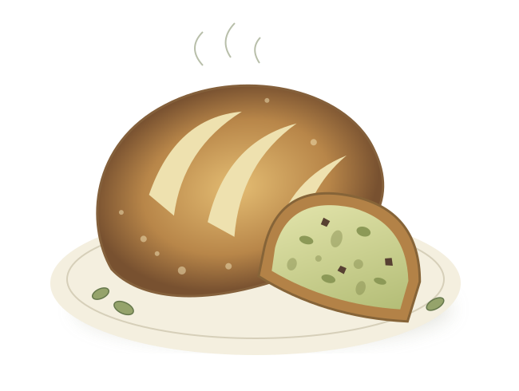

Asking better questions.
From mathematical models of urban traffic to weather and climate data, my research asks how we can understand the systems that shape everyday life.
Mathematics · Data · Real-world questionsA PERSONAL JOURNEY, WITH ROOM FOR OTHERS
I’m Arman. A researcher, a learner, and someone who believes that what we learn should help someone else grow.
Made with curiosity. Shared with purpose.

01 / WHERE IT BEGAN
I looked at a tub of pistachio ice cream and thought: what if this were bread?
A normal person would’ve eaten the ice cream. I reached for the flour. Then came chocolate chips. Then pistachios. Then more pistachios. I wasn’t sure it would work, but I was already committed.
My mother taught me my first sourdough recipe: flour, water, starter, salt. After she died, I began cooking for my family. That simple loaf became something I could return to, and eventually something I could change.
AmioShishu carries that same spirit: start with what you have, keep learning, and make something worth sharing.
“I’m burdened with glorious purpose.”MY MOTTO. MY REMINDER TO KEEP SHOWING UP.
02 / THE REASON BEHIND IT
Talent is everywhere. Access isn’t. I want my work to serve underserved students, children with disabilities, and young people who don’t have the resources or support they need to learn.
Even an Olympiad is part of that purpose. I learn to become better equipped to teach. I research to become better equipped to solve problems. An achievement matters more to me when it becomes something I can pass on.
03 / WHAT I’M BRINGING TO THE TABLE
What I’m learning.
What I hope to share.
From mathematical models of urban traffic to weather and climate data, my research asks how we can understand the systems that shape everyday life.
Mathematics · Data · Real-world questionsOlympiads push me to think carefully and explain clearly. I want to turn that practice into learning resources that make difficult ideas less intimidating.
Problem-solving · Explanation · CuriosityMy purpose is to help children learn in ways that work for them. I want to build accessible materials and support students whose needs are too often overlooked.
Education · Inclusion · A continuing commitment04 / THE SMALL, REAL MOMENTS
People, projects, and little beginnings.
05 / NOTES FROM THE KITCHEN TABLE
LET’S MAKE SOMETHING MEANINGFUL
Have an idea for a learning resource, an inclusive project,
or something we could build together? I’d love to hear it.